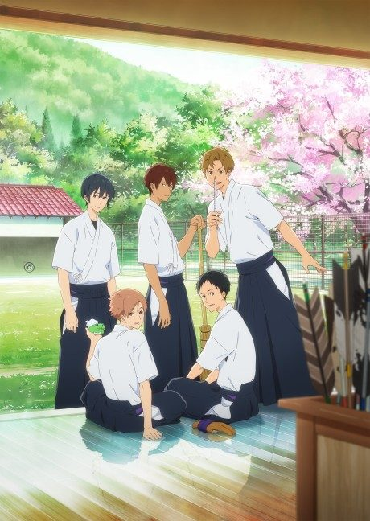

Anime
Light novel
Tsurune
ツルネ ―風舞高校弓道部―
The anime takes the story to Unclear.
7.6AniList
—Animeter
26 ep2 seasons
Anime finished. Where does the story go next?
StatusNo source yet
We looked for where the anime ends in the light novel but found no source we trust yet. The light novel is still running.